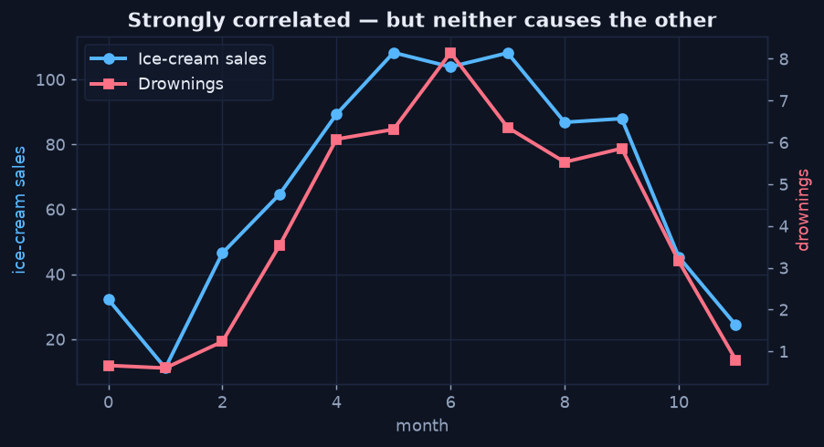

Correlation Is Not Causation
Chapter 4 — The Discipline That Keeps Diagnosis Honest
The defining risk of diagnostic analytics is mistaking co-movement for cause. Two things can move together for three different reasons: one causes the other, both share a common cause, or it's pure coincidence in a small sample. The job of this final chapter is to resist the leap from "these correlate" to "this causes that."
The Classic Trap — A Lurking Common Cause
Ice-cream sales and drownings rise and fall together across the year. The correlation is real and strong — but neither causes the other. A third variable, summer temperature, drives both. The chart below (an illustrative example, not from the retail data) shows the two series tracking each other almost perfectly; acting on the correlation — "ban ice cream to prevent drownings" — would be absurd.
Python · illustrative confounder
# temperature is the hidden common cause of BOTH series
temp = 12 + 12 * np.sin((months - 3) / 12 * 2 * np.pi)
ice_cream = 20 + 4.0 * temp + noise # driven by temp
drownings = 1 + 0.25 * temp + noise # also driven by temp
# ice_cream and drownings correlate strongly, yet neither causes the other
Two strongly correlated series with no causal link between them — a hidden third variable (temperature) drives both.
How to Stay Honest
Diagnostic analytics earns its keep by treating every finding as a hypothesis and stress-testing it before acting:
- Look for a mechanism. Is there a plausible reason X would cause Y? "Discount reduces margin" has a direct mechanism; "ice cream causes drownings" does not.
- Hunt for a confounder. Ask what third variable could drive both. If you can name one, the correlation is suspect.
- Check within subgroups. A relationship that reverses inside each segment (Simpson's paradox) was never causal at the aggregate level.
- Validate where stakes are high. The gold standard is a controlled comparison or experiment — change the lever and measure the effect, rather than inferring it.
Back to the Retail Case
The discount → margin finding survives all four checks: it has a direct mechanism (margin is literally reduced by the discount), no plausible confounder explains it away, it holds within every category, and it could be confirmed with a simple pricing experiment. That is the difference between a correlation worth acting on and one worth ignoring — and it's the bridge into predictive analytics, where validated drivers become model features.
That completes the Diagnostic Analytics mini-series. Continue with Predictive Analytics — What Will Happen? →